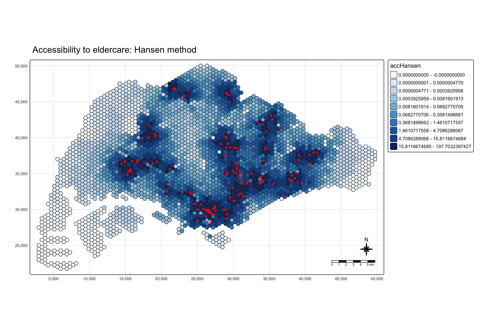
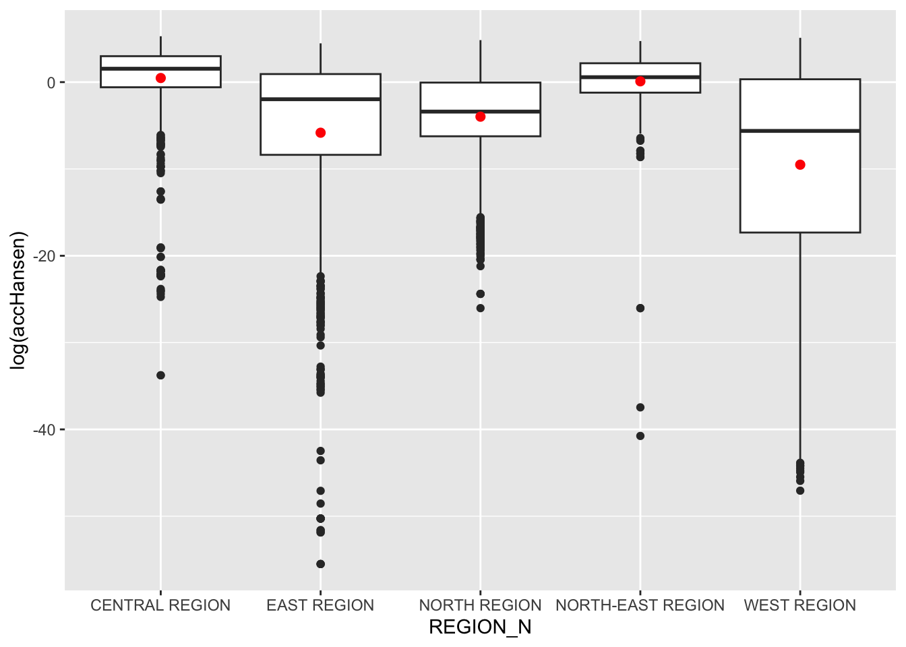
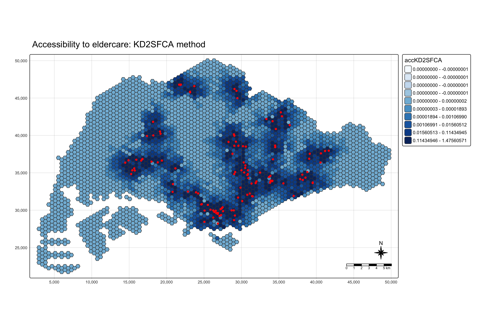
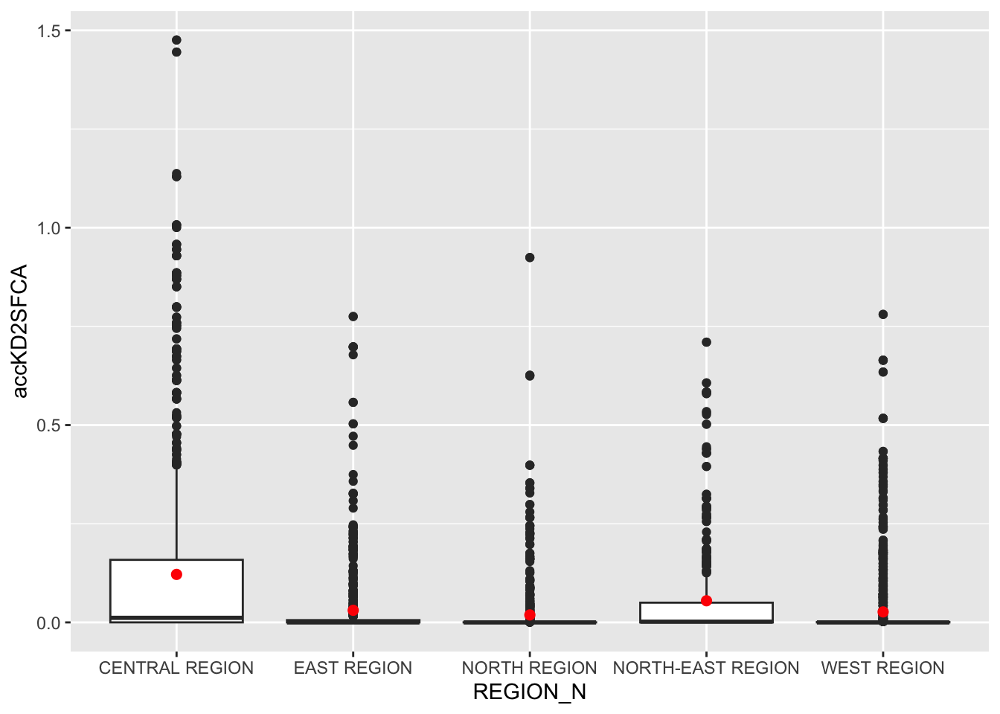
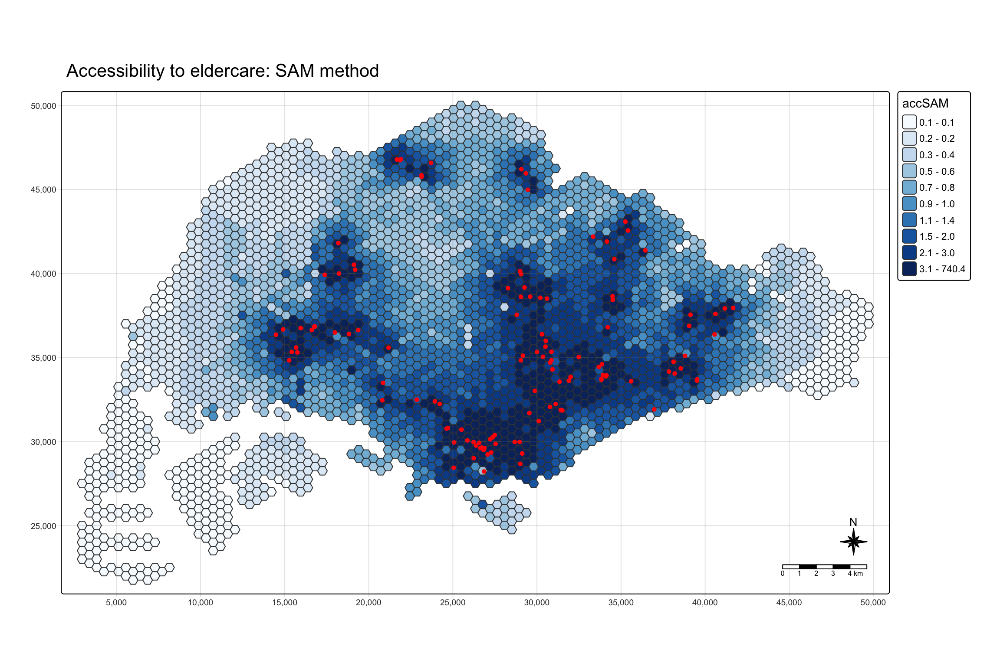
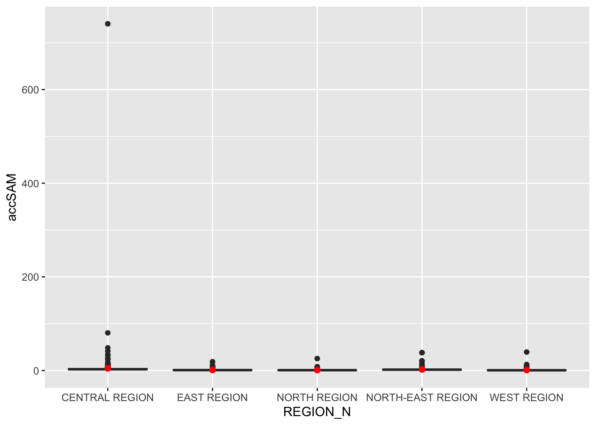
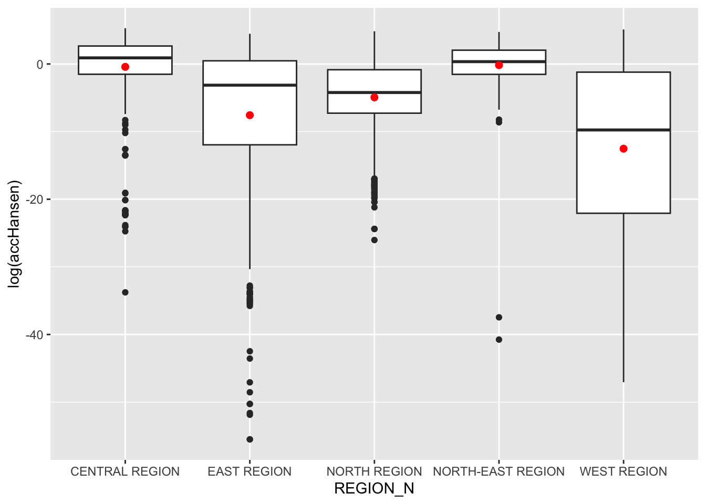
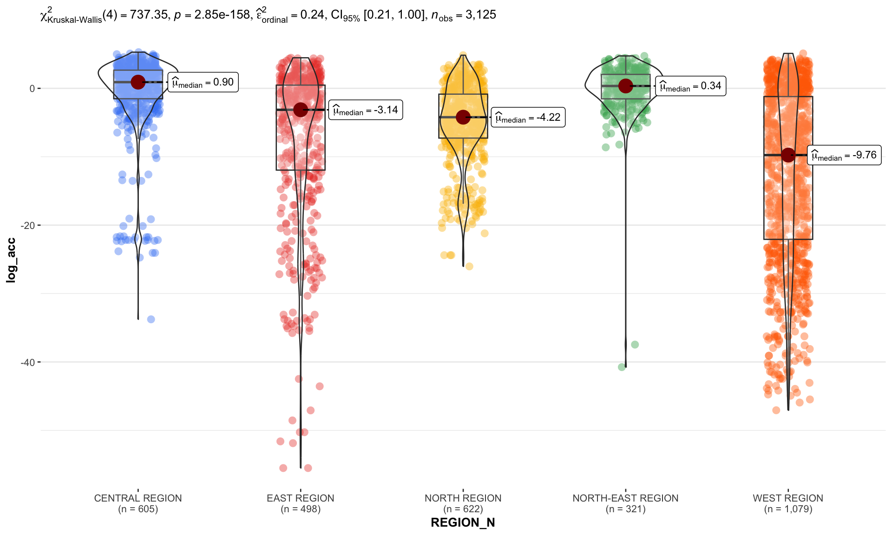

pacman::p_load(tmap, SpatialAcc, sf,
ggstatsplot, reshape2,
tidyverse)Nor Hendra
Geospatial Analytics & Applications
Hands-on Exercise 7: Modelling Geographical Accessibility
1. Learning Outcome
This exercise measures how easy it is to reach eldercare services across Singapore. I compute accessibility on a grid of 250m hexagons using three methods, Hansen’s potential model, KD2SFCA and the Spatial Accessibility Measure (SAM), then map each result and compare the scores by URA planning region.
Along the way I practise importing polygon and point data with sf, importing an aspatial distance matrix, reshaping it into the form the modelling package expects, and visualising the output with tmap and ggplot2.
2. The Data
Four data sets are used:
MP14_SUBZONE_NO_SEA_PL: URA Master Plan 2014 subzone boundaries, from data.gov.sg.hexagons: a 250m radius hexagon grid made withst_make_grid()of sf, in ESRI shapefile format. Each hexagon is a demand point.ELDERCARE: locations of eldercare services, from data.gov.sg, in ESRI shapefile format. Each centre is a supply point.OD_Matrix: a distance matrix in csv format with six fields:origin_id: thefidof the hexagon.destination_id: thefidof the eldercare centre.entry_cost: the perpendicular distance between the origin and the nearest road.network_cost: the network distance between origin and destination.exit_cost: the perpendicular distance between the destination and the nearest road.total_cost: the sum of the three costs above.
All cost fields are in metres. Apart from the URA subzone data, the other three data sets were prepared by Prof. Kam for teaching and research, so they stay within this course unless he approves otherwise.
3. Installing and Loading the R Packages
The packages for this exercise:
- sf for importing and handling geospatial data.
- SpatialAcc for the accessibility models.
- tidyverse, mainly readr and dplyr, for attribute data handling. It also brings in ggplot2, tidyr and others.
- tmap for thematic maps.
- ggstatsplot for statistical graphics and analysis.
- reshape2, which the reference loads alongside the others.
ggstatsplot is not called in the main walkthrough but gets a use in the Extras.
4. Geospatial Data Wrangling
4.1 Importing geospatial data
The three shapefiles sit in data/geospatial. st_read() of sf takes the folder as dsn and the file name as layer.
mpsz <- st_read(dsn = "data/geospatial", layer = "MP14_SUBZONE_NO_SEA_PL")Reading layer `MP14_SUBZONE_NO_SEA_PL' from data source
`/Users/norhendra/norhendra/ISSS626-GAA/Hands-on_Ex/Hands-on_Ex07/data/geospatial'
using driver `ESRI Shapefile'
Simple feature collection with 323 features and 15 fields
Geometry type: MULTIPOLYGON
Dimension: XY
Bounding box: xmin: 2667.538 ymin: 15748.72 xmax: 56396.44 ymax: 50256.33
Projected CRS: SVY21hexagons <- st_read(dsn = "data/geospatial", layer = "hexagons")Reading layer `hexagons' from data source
`/Users/norhendra/norhendra/ISSS626-GAA/Hands-on_Ex/Hands-on_Ex07/data/geospatial'
using driver `ESRI Shapefile'
Simple feature collection with 3125 features and 6 fields
Geometry type: POLYGON
Dimension: XY
Bounding box: xmin: 2667.538 ymin: 21506.33 xmax: 50010.26 ymax: 50256.33
Projected CRS: SVY21 / Singapore TMeldercare <- st_read(dsn = "data/geospatial", layer = "ELDERCARE")Reading layer `ELDERCARE' from data source
`/Users/norhendra/norhendra/ISSS626-GAA/Hands-on_Ex/Hands-on_Ex07/data/geospatial'
using driver `ESRI Shapefile'
Simple feature collection with 120 features and 19 fields
Geometry type: POINT
Dimension: XY
Bounding box: xmin: 14481.92 ymin: 28218.43 xmax: 41665.14 ymax: 46804.9
Projected CRS: SVY21 / Singapore TMmpsz comes in as a multipolygon simple feature object. The reference says it has no EPSG information, so I checked the EPSG slot of all three layers instead of only the first.
sapply(list(mpsz = mpsz, hexagons = hexagons, eldercare = eldercare),
function(x) st_crs(x)$epsg) mpsz hexagons eldercare
NA 3414 3414 An NA here means GDAL read the .prj file but could not match it to an EPSG code. The three .prj files do not name the CRS the same way: mpsz is labelled SVY21, while hexagons and eldercare are labelled SVY21_Singapore_TM. That alone could explain why they are not all treated alike.
4.2 Updating CRS information
All three layers are set to the SVY21 code, EPSG 3414.
mpsz <- st_transform(mpsz, 3414)
eldercare <- st_transform(eldercare, 3414)
hexagons <- st_transform(hexagons, 3414)Checking mpsz with st_crs():
st_crs(mpsz)Coordinate Reference System:
User input: EPSG:3414
wkt:
PROJCRS["SVY21 / Singapore TM",
BASEGEOGCRS["SVY21",
DATUM["SVY21",
ELLIPSOID["WGS 84",6378137,298.257223563,
LENGTHUNIT["metre",1]]],
PRIMEM["Greenwich",0,
ANGLEUNIT["degree",0.0174532925199433]],
ID["EPSG",4757]],
CONVERSION["Singapore Transverse Mercator",
METHOD["Transverse Mercator",
ID["EPSG",9807]],
PARAMETER["Latitude of natural origin",1.36666666666667,
ANGLEUNIT["degree",0.0174532925199433],
ID["EPSG",8801]],
PARAMETER["Longitude of natural origin",103.833333333333,
ANGLEUNIT["degree",0.0174532925199433],
ID["EPSG",8802]],
PARAMETER["Scale factor at natural origin",1,
SCALEUNIT["unity",1],
ID["EPSG",8805]],
PARAMETER["False easting",28001.642,
LENGTHUNIT["metre",1],
ID["EPSG",8806]],
PARAMETER["False northing",38744.572,
LENGTHUNIT["metre",1],
ID["EPSG",8807]]],
CS[Cartesian,2],
AXIS["northing (N)",north,
ORDER[1],
LENGTHUNIT["metre",1]],
AXIS["easting (E)",east,
ORDER[2],
LENGTHUNIT["metre",1]],
USAGE[
SCOPE["Cadastre, engineering survey, topographic mapping."],
AREA["Singapore - onshore and offshore."],
BBOX[1.13,103.59,1.47,104.07]],
ID["EPSG",3414]]The ID line at the bottom should now read EPSG 3414. Repeating the earlier EPSG check across the three layers:
sapply(list(mpsz = mpsz, hexagons = hexagons, eldercare = eldercare),
function(x) st_crs(x)$epsg) mpsz hexagons eldercare
3414 3414 3414 4.3 Cleaning and updating attribute fields
eldercare and hexagons carry many redundant fields. I keep only what is needed and add a capacity field to eldercare and a demand field to hexagons with mutate() of dplyr.
eldercare <- eldercare %>%
select(fid, ADDRESSPOS) %>%
mutate(capacity = 100)hexagons <- hexagons %>%
select(fid) %>%
mutate(demand = 100)Both values are a constant 100, which is a teaching placeholder. A real analysis would use actual demand for each hexagon and actual capacity for each centre.
One thing about eldercare before moving on. The accessibility function matches centres to distance-matrix columns by position, so the IDs matter.
nrow(eldercare)[1] 120range(eldercare$fid)[1] 1 133There are 120 centres, yet fid runs from 1 to 133, so 13 ids are missing. Section 5.2 checks that the distance matrix skips the same ids.
5. Aspatial Data Handling and Wrangling
5.1 Importing the distance matrix
read_csv() of readr brings OD_Matrix.csv in as a tibble called ODMatrix.
ODMatrix <- read_csv("data/aspatial/OD_Matrix.csv", skip = 0)head(ODMatrix)# A tibble: 6 × 6
origin_id destination_id entry_cost network_cost exit_cost total_cost
<dbl> <dbl> <dbl> <dbl> <dbl> <dbl>
1 1 1 668. 19847. 47.6 20562.
2 1 2 668. 45027. 31.9 45727.
3 1 3 668. 17644. 173. 18486.
4 1 4 668. 36010. 92.2 36770.
5 1 5 668. 31068. 64.6 31801.
6 1 6 668. 31195. 117. 31980.The matrix is stored in long form: one row per origin and destination pair. With 3,125 hexagons and 120 centres, that should come to 375,000 rows.
dim(ODMatrix)[1] 375000 65.2 Tidying the distance matrix
Most modelling packages in R expect a wide matrix. Rows are origins (the from field) and columns are destinations (the to field). spread() of tidyr turns the thin table into a fat one.
distmat <- ODMatrix %>%
select(origin_id, destination_id, total_cost) %>%
spread(destination_id, total_cost)%>%
select(c(-c('origin_id')))dim(distmat)[1] 3125 120Since tidyr 1.0, pivot_wider() is the recommended function and spread() is retired. spread() still runs here, so I kept it as written. Section 9.1 checks that pivot_wider() gives the same matrix.
The distances are in metres because SVY21 is a projected system. Dividing by 1000 gives kilometres.
distmat_km <- as.matrix(distmat/1000)Because rows and columns carry no IDs now, the order has to line up with the sf objects. Rows should follow hexagons$fid and columns should follow eldercare$fid.
all.equal(as.numeric(hexagons$fid), as.numeric(sort(unique(ODMatrix$origin_id))))[1] TRUEall.equal(as.numeric(eldercare$fid), as.numeric(colnames(distmat)))[1] TRUEBoth should return TRUE. If the second did not, eldercare$capacity would be paired with the wrong columns without any error message.
6. Modelling and Visualising Accessibility using the Hansen Method
6.1 Computing Hansen’s accessibility
The accessibility itself comes from ac() of SpatialAcc. The package manual lists the arguments, and they are worth a read before running anything.
data.frame() stores the output as acc_Hansen.
acc_Hansen <- data.frame(ac(hexagons$demand,
eldercare$capacity,
distmat_km,
#d0 = 50,
power = 2,
family = "Hansen"))The default column name is untidy, so I rename it to accHansen.
colnames(acc_Hansen) <- "accHansen"
head(acc_Hansen) accHansen
1 1.648313e-14
2 1.096143e-16
3 3.865857e-17
4 1.482856e-17
5 1.051348e-17
6 5.076391e-18Next the data table becomes a tibble.
acc_Hansen <- as_tibble(acc_Hansen)bind_cols() of dplyr then attaches it to the hexagons. The result, hexagon_Hansen, stays a simple feature data frame.
hexagon_Hansen <- bind_cols(hexagons, acc_Hansen)head(hexagon_Hansen)Simple feature collection with 6 features and 3 fields
Geometry type: POLYGON
Dimension: XY
Bounding box: xmin: 2667.538 ymin: 22756.33 xmax: 3244.888 ymax: 27756.33
Projected CRS: SVY21 / Singapore TM
fid demand accHansen geometry
1 1 100 1.648313e-14 POLYGON ((2667.538 27506.33...
2 2 100 1.096143e-16 POLYGON ((2667.538 25006.33...
3 3 100 3.865857e-17 POLYGON ((2667.538 24506.33...
4 4 100 1.482856e-17 POLYGON ((2667.538 24006.33...
5 5 100 1.051348e-17 POLYGON ((2667.538 23506.33...
6 6 100 5.076391e-18 POLYGON ((2667.538 23006.33...The same steps fit in one chunk:
acc_Hansen <- data.frame(ac(hexagons$demand,
eldercare$capacity,
distmat_km,
#d0 = 50,
power = 2,
family = "Hansen"))
colnames(acc_Hansen) <- "accHansen"
acc_Hansen <- as_tibble(acc_Hansen)
hexagon_Hansen <- bind_cols(hexagons, acc_Hansen)
WarningThe one-chunk version used a different power
The reference’s combined chunk has power = 0.5, while the step-by-step chunk above it uses power = 2. Both are presented as the same computation, and they are not. A lower power flattens the distance penalty, so the scores would be different. I set the combined chunk to power = 2 to match what I actually ran. Section 9.2 compares the two powers directly.
6.2 Visualising Hansen’s accessibility
6.2.1 Extracting the map extent
st_bbox() of sf gives the extent of the hexagons layer, which keeps the map frame fixed across the three methods.
mapex <- st_bbox(hexagons)The map layers hexagons coloured by accHansen under the eldercare points.
tm_shape(hexagon_Hansen,
bbox = mapex) +
tm_polygons(fill = "accHansen",
fill.scale = tm_scale_intervals(
style = "quantile",
n = 10,
values = "brewer.blues")) +
tm_shape(eldercare) +
tm_dots(size = 0.3,
fill = "red",
col = "black") +
tm_title("Accessibility to eldercare: Hansen method") +
tm_layout(frame = TRUE) +
tm_compass(type="8star", size = 2) +
tm_scalebar() +
tm_grid(alpha = 0.2)
6.3 Statistical graphic visualisation
The next comparison is the distribution of Hansen scores by planning region. st_join() adds the region field from mpsz to hexagon_Hansen.
hexagon_Hansen <- st_join(hexagon_Hansen, mpsz,
join = st_intersects)nrow(hexagons)[1] 3125nrow(hexagon_Hansen)[1] 5406
WarningMore rows than hexagons
st_intersects matches every subzone a hexagon touches. A hexagon sitting across a subzone boundary gets one row per subzone, so hexagon_Hansen now has more rows than hexagons. Working from the shapefile geometry, I expect roughly 5,400 rows from 3,125 hexagons. Boundary hexagons are therefore counted more than once in each boxplot below. I kept the join as the reference has it. Section 9.3 redoes it with one region per hexagon.
ggplot() draws the boxplot, with the mean marked in red. Scores are logged here, and only here.
ggplot(data=hexagon_Hansen,
aes(y = log(accHansen),
x= REGION_N)) +
geom_boxplot() +
geom_point(stat="summary",
fun="mean",
colour ="red",
size=2)
The reference passes fun.y = "mean". ggplot2 renamed that argument to fun in version 3.3.0, and fun.y now raises a deprecation warning. I used fun. The plot is the same.
7. Modelling and Visualising Accessibility using the KD2SFCA Method
7.1 Computing KD2SFCA’s accessibility
This section repeats the Hansen steps, with some of the code folded into one chunk. The family argument is now "KD2SFCA", and d0 = 5 is switched on.
# distmat_km is in kilometres, so d0 = 5 means a 5 km catchment
acc_KD2SFCA <- data.frame(ac(hexagons$demand,
eldercare$capacity,
distmat_km,
d0 = 5,
power = 2,
family = "KD2SFCA"))
colnames(acc_KD2SFCA) <- "accKD2SFCA"
acc_KD2SFCA <- as_tibble(acc_KD2SFCA)
hexagon_KD2SFCA <- bind_cols(hexagons, acc_KD2SFCA)With a 5 km catchment, some hexagons may have no centre inside it. Two counts to compare:
sum(apply(distmat_km, 1, min) > 5)[1] 1281sum(hexagon_KD2SFCA$accKD2SFCA == 0)[1] 1281The first counts hexagons whose nearest centre is farther than 5 km. The second counts hexagons that scored zero. If d0 works as a hard cut-off, the two numbers should match. From the csv, the first count should land near 1,281 of the 3,125 hexagons.
7.2 Visualising KD2SFCA’s accessibility
mapex is reused for the bbox argument.
tm_shape(hexagon_KD2SFCA,
bbox = mapex) +
tm_polygons(fill = "accKD2SFCA",
fill.scale = tm_scale_intervals(
style = "quantile",
n = 10,
values = "brewer.blues")) +
tm_shape(eldercare) +
tm_dots(size = 0.3,
fill = "red",
col = "black") +
tm_title("Accessibility to eldercare: KD2SFCA method") +
tm_layout(frame = TRUE) +
tm_compass(type="8star", size = 2) +
tm_scalebar() +
tm_grid(alpha = 0.2)
Note
If zeros make up a large share of these scores, several of the ten quantile breaks land on 0. A legend with fewer than ten classes would come from that and would not signal a mistake in the map code.
7.3 Statistical graphic visualisation
The same region comparison, starting with the join.
hexagon_KD2SFCA <- st_join(hexagon_KD2SFCA, mpsz,
join = st_intersects)ggplot(data=hexagon_KD2SFCA,
aes(y = accKD2SFCA,
x= REGION_N)) +
geom_boxplot() +
geom_point(stat="summary",
fun="mean",
colour ="red",
size=2)
8. Modelling and Visualising Accessibility using the Spatial Accessibility Measure (SAM) Method
8.1 Computing SAM accessibility
Same pattern again, with family = "SAM".
acc_SAM <- data.frame(ac(hexagons$demand,
eldercare$capacity,
distmat_km,
d0 = 5,
power = 2,
family = "SAM"))
colnames(acc_SAM) <- "accSAM"
acc_SAM <- as_tibble(acc_SAM)
hexagon_SAM <- bind_cols(hexagons, acc_SAM)sum(hexagon_SAM$accSAM == 0)[1] 08.2 Visualising SAM’s accessibility
tm_shape(hexagon_SAM,
bbox = mapex) +
tm_polygons(fill = "accSAM",
fill.scale = tm_scale_intervals(
style = "quantile",
n = 10,
values = "brewer.blues")) +
tm_shape(eldercare) +
tm_dots(size = 0.3,
fill = "red",
col = "black") +
tm_title("Accessibility to eldercare: SAM method") +
tm_layout(frame = TRUE) +
tm_compass(type="8star", size = 2) +
tm_scalebar() +
tm_grid(alpha = 0.2)
8.3 Statistical graphic visualisation
hexagon_SAM <- st_join(hexagon_SAM, mpsz,
join = st_intersects)ggplot(data=hexagon_SAM,
aes(y = accSAM,
x= REGION_N)) +
geom_boxplot() +
geom_point(stat="summary",
fun="mean",
colour ="red",
size=2)
9. Extras
Some extras I am documenting for exploration of this topic.
9.1 Does pivot_wider() give the same matrix as spread()?
The reference points to pivot_wider() as the modern replacement but never runs it. Here it is on the same three columns.
distmat_pw <- ODMatrix %>%
select(origin_id, destination_id, total_cost) %>%
pivot_wider(names_from = destination_id,
values_from = total_cost) %>%
select(-origin_id)
all.equal(as.matrix(distmat_pw), as.matrix(distmat))[1] TRUE
TipWhy I wanted to explore this
spread() sorts the new columns by destination id. pivot_wider() orders them by first appearance in the data. They agree only if every origin lists destinations in ascending order, so a TRUE here is a fact about this csv. all.equal() compares column names too, so a different order would show up as a difference.
9.2 How much does the Hansen power matter?
The reference runs power 2 in one place and 0.5 in another. Running three powers side by side shows how much that choice changes things.
acc_pow <- sapply(c(0.5, 1, 2),
function(p) ac(hexagons$demand,
eldercare$capacity,
distmat_km,
power = p,
family = "Hansen"))
colnames(acc_pow) <- c("power_0.5", "power_1", "power_2")
summary(acc_pow) power_0.5 power_1 power_2
Min. :1.080e-03 Min. : 0.0000 Min. : 0.00000
1st Qu.:1.371e+01 1st Qu.: 0.1454 1st Qu.: 0.00003
Median :8.872e+01 Median : 6.3677 Median : 0.06828
Mean :1.550e+02 Mean : 30.9599 Mean : 5.41900
3rd Qu.:2.399e+02 3rd Qu.: 40.0990 3rd Qu.: 2.54305
Max. :1.158e+03 Max. :538.0331 Max. :197.70324 cor(acc_pow, method = "spearman") power_0.5 power_1 power_2
power_0.5 1.0000000 0.9769392 0.9518166
power_1 0.9769392 1.0000000 0.9936932
power_2 0.9518166 0.9936932 1.0000000The summary shows how the scale of the scores moves with the power. The rank correlation shows whether the map ordering moves with it. Those are two separate questions, and a high correlation with very different summaries is a possible outcome.
The Hansen chunk also carries a commented-out d0 = 50. A direct test of whether d0 does anything for this family:
acc_d0 <- ac(hexagons$demand,
eldercare$capacity,
distmat_km,
d0 = 5,
power = 2,
family = "Hansen")
all.equal(as.numeric(acc_d0), as.numeric(acc_pow[, "power_2"]))[1] TRUETRUE means Hansen ignores d0, which would fit why the reference leaves it commented out.
9.3 One region per hexagon
Section 6.3 duplicated boundary hexagons. largest = TRUE in st_join() keeps only the subzone with the biggest overlap, so each hexagon appears once.
hexagon_Hansen_1 <- bind_cols(hexagons, acc_Hansen) %>%
st_join(mpsz %>% select(REGION_N),
join = st_intersects,
largest = TRUE)
nrow(hexagon_Hansen_1)[1] 3125table(hexagon_Hansen$REGION_N)
CENTRAL REGION EAST REGION NORTH REGION NORTH-EAST REGION
1392 776 976 659
WEST REGION
1603 table(hexagon_Hansen_1$REGION_N)
CENTRAL REGION EAST REGION NORTH REGION NORTH-EAST REGION
605 498 622 321
WEST REGION
1079 The first table is the duplicated version. The second sums to 3,125.
ggplot(data=hexagon_Hansen_1,
aes(y = log(accHansen),
x= REGION_N)) +
geom_boxplot() +
geom_point(stat="summary",
fun="mean",
colour ="red",
size=2)
TipWhy I wanted to explore this
The reference boxplots count a hexagon once for every subzone it touches. Whether that visibly changes the picture depends on how much the extra rows differ from the rest of the region. Comparing this plot with the one in 6.3 shows how much the duplicates mattered.
9.5 Putting ggstatsplot to use
A nonparametric comparison of logged Hansen scores across regions, using the one-row-per-hexagon data from 9.3:
hexagon_Hansen_1 %>%
st_drop_geometry() %>%
mutate(log_acc = log(accHansen)) %>%
ggbetweenstats(x = REGION_N,
y = log_acc,
type = "nonparametric",
pairwise.display = "none")
TipWhy I wanted to explore this
The boxplots in the reference only invite an eyeball comparison. This adds a test statistic and an effect size. Neighbouring hexagons are spatially autocorrelated, so the p-value is optimistic. I read it as a rough signal, and the effect size as the part to take away.
Summary of Adjustments
| Location in reference | Issue found | Correction applied |
|---|---|---|
| 17.4.2 (CRS check) | Only mpsz is checked after the transform |
Added an EPSG check across all three layers before and after the transform |
| 17.4.3 and 17.5.2 (IDs and order) | ac() matches by position, but eldercare$fid has gaps (120 centres, ids up to 133) |
Added checks that hexagons$fid and eldercare$fid line up with the matrix rows and columns |
17.5.2 (spread()) |
Retired in tidyr in favour of pivot_wider() |
Kept spread() as written, tested pivot_wider() in 9.1 |
| 17.6.1 (one-chunk Hansen) | power = 0.5 differs from the power = 2 used in the step-by-step version |
Set to power = 2 so both match, compared powers in 9.2 |
| Boxplot chunks (17.6.3, 17.7.3, 17.8.3) | fun.y is deprecated in ggplot2 |
Changed to fun |
st_join() before the boxplots |
One row per touching subzone, so boundary hexagons repeat | Kept as in the reference, added a row count check, redone with largest = TRUE in 9.3 |
| 17.7.2 and 17.8.2 (quantile classes) | Many zero scores can collapse quantile breaks | Kept the reference code, added zero counts in 7.1 and 8.1 and a note in 7.2 |